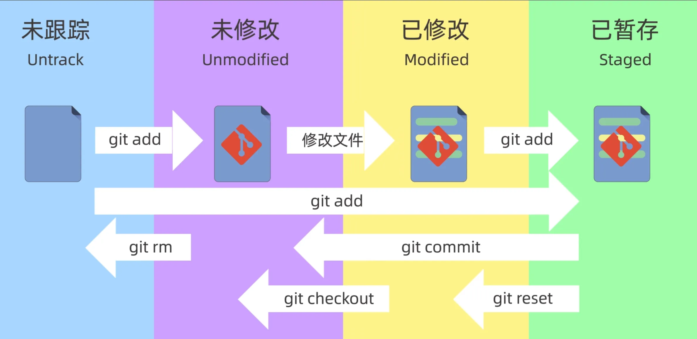

工具链
本文介绍了Git，GDB，Makefile，CMake四种C/C++编程中常用的工具链，还涉及一点GCC制作库文件的内容
工具链
Git
Git本地操作
版本控制系统分为2种
- 集中式版本控制系统 如SVN
- 分布式版本控制系统 如Git
相比SVN，Git可靠性高但操作复杂
git init [dir]//在dir下创建新的本地仓库，缺省则在当前目录创建
/* 全局配置git仓库的用户名，对所有仓库生效，省略则为本地仓库有效 */
git config --global user.name "用户名"
/* 全局配置git仓库的邮箱，对所有仓库生效，省略则为本地仓库有效 */
git config --global user.email "邮箱"
/* 保存用户名和密码 */
git config --global credential.helper store
/* 查看当前git配置 */
git config --global --list
{kind=link}
- 工作区 .git所在目录，正常编辑代码的区域
- 暂存区 .git/index所在目录，即将提交到git的文件区域
- 本地仓库 .git/objectsgit所在目录 init生成的文件区域，是git存储代码和版本信息的主要位置
每次修改文件都需要提交很麻烦，因此产生了暂存区，当修改所有文件完毕后再统一提交至本地仓库 2024-01-02_15-15
{kind=link}
/* 将filename文件添加到暂存区内，支持通配符( * . 等) */
git add [filename]
/* 查看当前文件状态 */
git status
/* 提交，支持通配符 */
git commit -m "提交说明"
/* 暂存且提交，支持通配符 */
git commit -a -m "提交说明"
/* 查看提交日志 */
git log
/* 查看暂存区文件 */
git ls-files:::alert-danger 需要将文件提交到暂存区内才能使用 git commit命令 :::
/* 将文件撤销所有更改到最后一次提交的状态 */
git checkout -- <filename>
/* 回退到某一版本,保留工作区和暂存区内容 */
git reset [版本id]
git reset --soft [版本id]
/* 不保留工作区和暂存区内容 */
git reset --hard
/* 仅保留工作区内容 */
git reset --mixed
/* 恢复git reset --hard的操作 */
git reflog
/* 当在一个分支上进行修改而且需要转到另一个分支上时，可能会提示未保存修改，这时需要用到如下命令保存当前分支已修改的文件 */
git stash使用 –hard 参数需要谨慎考虑，git reset默认执行 –soft命令
/* 从工作区和暂存区中删除文件 */
git rm [filename]
/* 仅在暂存区中删除文件，保留工作区内容 */
git rm --cached [filename]
/* 查看工作区和暂存区的不同 */
git diff
/* 查看暂存区与本地仓库的不同 */
git diff HEAD
/* 查看前第n个提交版本与当前提交版本的不同 */
git diff HEAD~[n] HEADdiff后红色内容表示删除内容，绿色表示增加内容
Git远程操作

/* eg git remote add origin git@github.com:1078249029/toyFreeRTOS.git */
git remote add <远程仓库别名><远程仓库地址> //仓库别名缺省为origin
/* 将本地分支与远程仓库的远程分支联系起来
* eg git push -u(upstream) origin main(远程分支与本地分支重名只写一个即可)
*/
git push -u <远程仓库名><远程分支名> <本地分支名>
/* 获取远程仓库名，分支名等信息 */
git remote -v
/* 拉取远程仓库并自动合并 */
git pull <远程仓库名><远程分支名> <本地分支名>
/* 查看分支列表 */
git branch
/* 图形化查看分支图 */
git log --graph --oneline --decorate --all
/* 创建分支 */
git branch [branch-name]
/* 切换分支 */
git switch [branch-name]
/* 合并分支 */
git merge [branch-name]
/* 将主分支文件同步到其他分支 */
git merge [主分支名称] //使用前需要切换到其他分支
/* 删除分支 */
git branch -d [branch-name] //删除已合并分支
git branch -D [branch-name] //删除未合并分支
/* 恢复某分支的状态 */
git checkout -b [branch-name] [commit-id]
/* 从PR中取消提交某个已提交的文件 */
git switch master //切换到保留这个文件最初状态的分支
git checkout origin/master -- <filename> //用最初的文件替换掉已提交文件::: alert-info merge时需要切换到主分支 merge后分支依然存在，除非手动删除分支 :::

GitFlow
适用于团队水平适中的情况
五种分支: main hotfix release develop feature
main 包含项目最新的稳定代码
hotfix 用于解决线上问题，均从main分离出来
dev 用于开发测试
release 均来源于develop，测试稳定后发布到main，发现bug发布到dev
主要分支包括dev和main
GitHub Flow
适用于团队水平较高的情况

整个项目只有两个分支，开发者从Master中branch一个分支用于开发，需要进行merge时发起一个Pull Request请求，待团队审核后再merge到Master
GitHub
配置Github的SSH密钥时，最好把密钥统一放在.ssh文件夹下(win下是C:\Users\你的用户名.ssh)，并且写好config文件来管理多份密钥
Repo
-
repo是什么？
- repo是Google开发的用于管理Android版本库的一个工具，repo是使用Python对git进行了一定的封装，并不是用于取代git，它简化了对多个Git版本库的管理。用repo管理的版本库都需要使用git命令来进行操作。因此，使用repo工具之前，请先确保已经安装git
-
为什么要用repo？
- 项目模块化/组件化之后各模块也作为独立的 Git 仓库从主项目里剥离了出去，各模块各自管理自己的版本。Android源码引用了很多开源项目，每一个子项目都是一个Git仓库，每个Git仓库都有很多分支版本，为了方便统一管理各个子项目的Git仓库，需要一个上层工具批量进行处理，因此repo诞生。
repo用于Android项目管理
Git实战——以RTThread为例
为了能够与开发团队保持同步，我们对rtt项目进行fork，需要注意的是在fork时需要选择fork全部分支，这样才能使用v4.1.x的版本。
fork仅仅是在github上生成我们自己的仓库，但是本地还没有生成，因此我们需要执行
git clone my_github_fork随后会在我们本地生成一个项目文件夹，我们进入这个rt-thread文件夹内，执行branch命令会发现这里仅有master一个分支。而远端仓库只有我们fork出来的rtt项目

由于我们需要使用的是lts-v4.1.x分支，而这个分支与rtt项目的master分支是同步开发的，因此我们首先需要建立本地仓库与rtt官方仓库的联系，执行
git remote add 远程仓库的别名 远程仓库在这里我们使用upstream作为别名
git remote add upstream git@github.com:RT-Thread/rt-thread.git这样当我们执行git fetch upstream的时候就会保持与rtt官方仓库的一致了
下面是建立联系后的样子

我们最好还要同步一下分支状态
git fetch upstream

这里我们就可以正式建立分支了
git branch 本地分支名 远程仓库别名/远程分支名至此，我们的项目就可以进行开发了，之后同步官方仓库的状态可以使用 git fetch upstream，上传到我们自己的仓库使用 git push origin
GCC
gcc(g++)
- 预处理阶段 (-E，得到.i文件)（巧记：ESC，iso）
- 处理#include预编译指令，将被包含的文件直接插入到预编译指令的位置
- 处理所有的条件预编译指令，比如#if，#else，#endif，#ifdef等
- 预处理器将所有的#define删除，并且展开所有的宏定义
- 删除所有的注释
- 添加行号和文件标识，以便编译错误时提供错误或警告的行号
- 保留所有#pragma编译器指令
gcc -E -o hello.i hello.c- 编译阶段 (-S，调用cc1程序得到.s文件)
- 将预处理后的file.i文件进行语法词法分析，翻译成文本文件file.s，里面储存了各种汇编指令
gcc -S -o hello.s hello.i- 汇编阶段 (-c，调用ar程序得到.o文件)
- 根据编译文件中的汇编码得到二进制机器码文件，生成各个段，生成符号表
gcc -c -o hello.o hello.s- 链接阶段 (gcc file.o，调用collect2程序)
- 将链接文件链接到file.o文件中
- 静态链接：内存开销大，速度快。将所有需要的函数的二进制代码拷贝到可执行文件中去
- 动态链接：内存开销小，速度慢。不需要将所有需要的函数的二进制代码拷贝到可执行文件中去，而是记录一系列符号和参数，在程序运行或加载时将这些信息传递给操作系统，操作系统将这些动态库加载到内存中，然后当程序运行到指定代码时，去共享执行内存中找到已经加载动态库可执行代码，最终达到运行时链接的目的
gcc -M hello.c 打印hello.c的依赖
gcc -M -MF hello.d hello.c 输出hello.c的依赖到hello.d文件内
gcc -c -o hello.o hello.c -MD -MF hello.d 编译hello.c并输出依赖到hello.d文件
gcc -I /usr/hello 指定头文件目录
gcc -L /usr/hello 指定库文件目录
gcc -l /usr/hello/libm.so 指定哪个库文件linux-gcc默认最终的输出文件为elf类型，经过编译的.c文件是 .o文件(object，目标文件)，链接后的为.elf文件，但同时也可以指定输出.out文件，这是一种老的可执行文件格式
GCC制作库文件
制作静态库
gcc -o hello.o hell.c
ar crs libhello.a hello.o制作动态库
gcc -o hello.o hello.c
gcc -shared -o libhello.so hello.oGDB
gcc -g //编译时记录调试信息，否则无法调试
gdb 可执行文件 //调试可执行文件
gdb 可执行文件 core转储文件 //调试含有core转储文件的可执行文件
进入gdb后
回车默认重复上一条命令
r(run) 运行程序
quit 退出调试
l 查看源码
bt(backtrace) 查看调用栈
list 查看源代码及行号
b(break) 行号/函数名 在行号或函数名打断点
info b 查看打断点的位置
delet b 删除断点
n(next) 逐步调试，但是不进入调用的函数内
s(step) 逐步调试，进入调用的函数内
c(continue) 继续运行
p(print) 表达式 打印变量或地址
watch 表达式 监视表达式的值，一旦变化，调试将会停在对应的行
shell 终端命令 调用终端命令Makefile
- 如何判断哪个文件被更改了？
- 比较源文件与输出文件的时间，如果源文件更新的话，那就意味着源文件已经被修改了
#makefile核心：规则
#目标：依赖1 依赖二...
#[TAB]命令
#下列目标文件test由a.o b.o链接生成
test:a.o b.o
gcc -o test a.o b.o
a.o:a.c
gcc -c -o a.o a.c
b.o:b.c
gcc -c -o b.o b.c
通配符：
*： 任意字符，但对于目标文件，优先使用%代替*
$：取值
@：目标值，@后加shell命令可以不显示命令但输出结果
$@：目标文件
$<：第一个依赖文件
$^：所有依赖文件
$(shell 命令)可以执行shell命令
假想目标文件：.PHONY 用于当目标文件与make命令重名时使用，用法：在makefile文件末尾加上.PHONY: 命令
A = xxx 变量赋值 $(A) 变量取值 = 延时变量，makefile分析完成整个文档后才会对变量赋值，没有写程序时的类似顺序执行的逻辑 := 即时变量，类似写程序时的顺序执行的关系，需要在当前行之前声明定义变量 ?= 在此行之前就已经定义变量时该语句无效，类似#ifndef += 附加，并不是加，是延时变量还是即时变量取决于前文
$(foreach var,list,text) 在list中的每一个var，都换为text $(filter pattern,text) 在text中取出符合pattern的值 $(filter-out pattern,text) 在text中取出不符合pattern的值 $(wildcard pattern) 在已存在的文件中取出符合pattern的值 $(patsubst pattern,replacement,$(var)) 在var中取出符合pattern的值，并替换为replacement CFLAGS 这个变量可以后加gcc的编译选项
CMake
{kind=link}